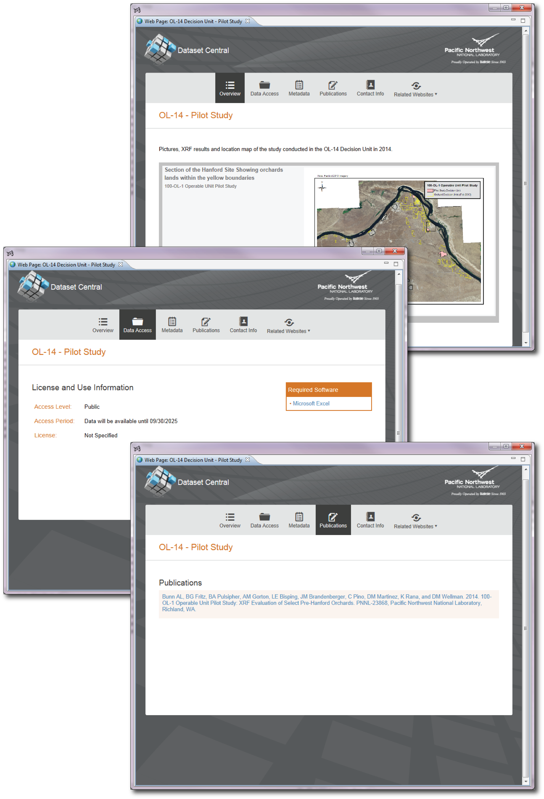

Velo provides a data publication service where datasets are published with a unique Digital Object Identifier (DOI) and registered with DataCite. The DOI for all registered datasets provides access to an introductory page called a landing page, including all the mandatory elements regarding the dataset and a link to download the dataset (access permitting).

Figure 1. Example of Landing Pages for a Dataset.